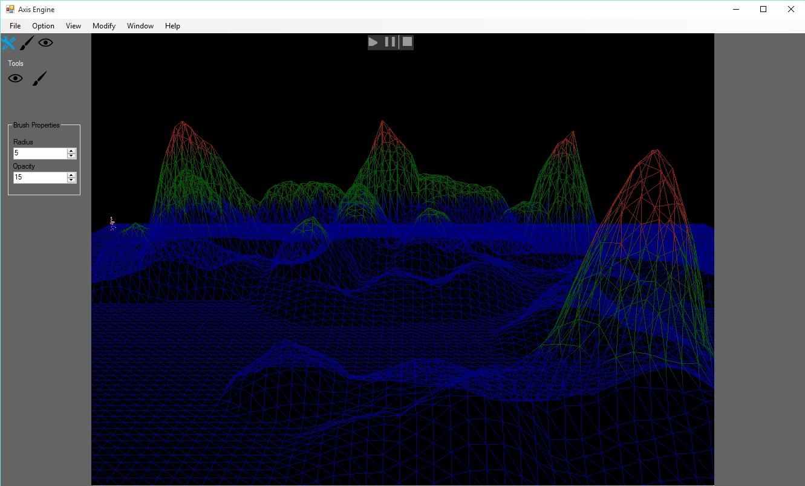
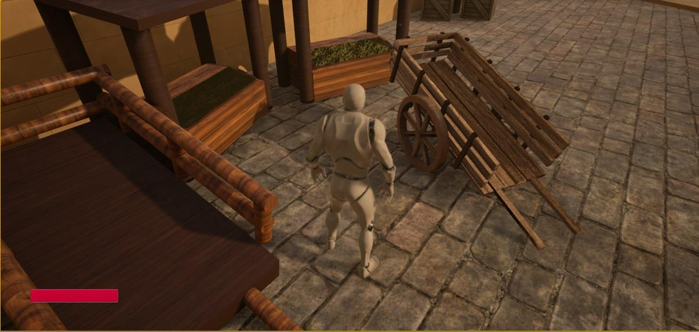

|  |
3D Game Engine Moteur de jeu 3D I learned from multiple tutorials, books and articles about making a game engine. This project started during winter 2013 when I first used c++. I've built this engine multiple times, learning from my mistakes until I greatly improved my programming and architectural skills. At first, I used the DirectX SDK until I switched to Windows SDK. I use an XML file as a bridge between the c# user interface of the game engine and the c++ executable project. J'ai appris de plusieurs tutoriels, livres et articles à propos du développement des moteurs de jeux. Ce projet a commencé en hiver 2013 quand j'ai commencé à utiliser le c++. J'ai développé mon moteur de jeu plusieurs fois, apprenant de mes erreurs jusqu'à ce que j'ai grandement amélioré ma programmation et mon architecture. Au début, j'utilisais le DirectX SDK jusqu'à ce que je change pour Windows SDK. Entre l'interface utilisateur c# du moteur de jeu et l'exécutable c++, j'utilise un fichier XML pour y sauvegarder ma scène. |
|  |
Unreal Engine Game Jeu Unreal Engine During my summer, I worked on a 3D game using Unreal Engine. This was the first project which I used an existing Engine. The goal was to experiment with 3D models, sounds, particules and game event while understanding how an engine can be interacted with. I also fiddled a lot with the water's displacement wave. This experience will guide me in the design of my own engine and in the progress of futur games. Durant l'été 2015, je travaillais sur un jeu 3D utilisant Unreal Engine. C'était le premier projet où j'ai utilisé un engin de jeu existant. Le but était d'expérimenter avec les modèles 3D, les sons, les particules et les événements de jeu. Je me suis aussi beaucoup amusé avec le déplacement de l'eau afin de la rendre réaliste. Cette expérience va me guider dans la conception de mon propre engin et dans le progrès de mes futurs jeux. |